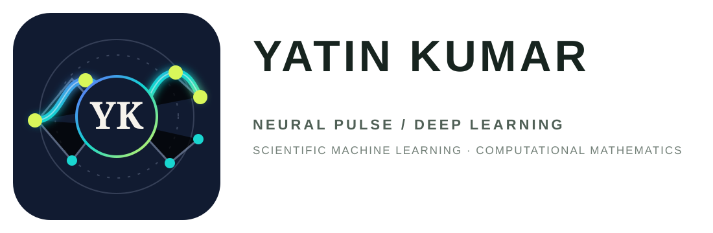
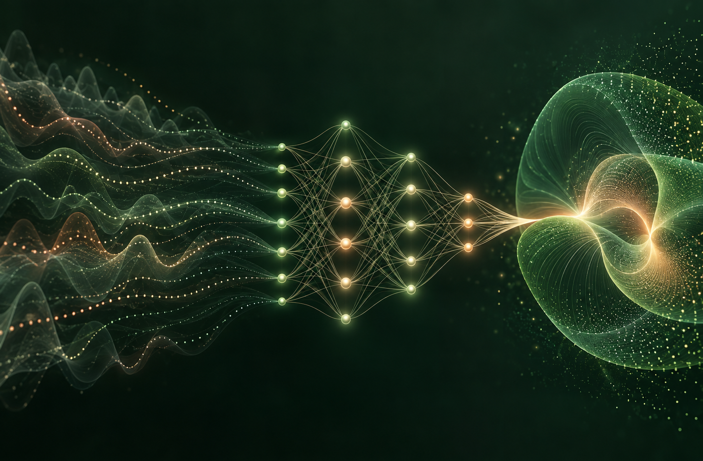

01
UNDER REVIEW
ADAPTIVE NEURAL SOLVERS
Dynamic Loss
Balancing
Self-adaptive neural solvers for nonlinear time-fractional Korteweg-de Vries equations with rigorous error analysis.
↗
Let's connect ↗Yatin Kumar
I am a PhD Research Scholar at NIT Hamirpur. My work combines rigorous numerical analysis with physics-informed neural networks, Kolmogorov-Arnold networks, wavelet neural networks, interpolation methods, and operator learning. I hold an M.Sc. in Mathematics from HNB Garhwal University and a B.Sc. in Physics, Chemistry, and Mathematics from D.A.V. (P.G.) College, Dehradun.
Neural solvers combine machine learning with the mathematical structure of physical models. I develop these methods to approximate complex fractional, nonlinear, and nonlocal systems with greater accuracy, stability, and interpretability.
Explore current research →

RESEARCH GOAL
To build reliable and interpretable neural solvers that learn from the past, and uncover the hidden memory of complex nonlinear local and nonlocal physical systems.
YATIN KUMAR · SCIENTIFIC MACHINE LEARNING
Journal articles
published
Accepted Elsevier
book chapter
Conference paper
presentations
Conference proceeding
accepted
Ministry of Education
doctoral fellowship
Developing adaptive, accurate neural methods for challenging fractional-order models.
ADAPTIVE NEURAL SOLVERS
Self-adaptive neural solvers for nonlinear time-fractional Korteweg-de Vries equations with rigorous error analysis.
↗NONLOCAL PHASE-FIELD MODELS
Numerical simulation of nonlocal time-fractional phase-field models through learnable deep architectures.
↗CFD & KOLMOGOROV-ARNOLD NETWORKS
Time-fractional Navier-Stokes equations on complex domains for realistic CFD reconstruction.
↗JOURNAL ARTICLE · 2025
JOURNAL ARTICLE · 2026
JOURNAL ARTICLE · 2026
Presentations on deep-learning solvers and fractional differential equations.
SCICADE · 2026
ICMOTA · 2026
ICNAAO · 2024
Alongside journal publications, I contribute through scholarly chapters, conference proceedings, and ongoing professional development.
For nonlinear time-fractional differential equations, in Artificial Intelligence Modeling for Dynamical Problems. Elsevier, ISBN 9780443491344.
→Using a Pell polynomial neural network. Proceedings of the Nonlinear Applied Analysis and Optimization, Springer Nature, 2026.
→International Faculty Development Programme on differential equations and numerical computing, NIT Calicut.
→My research uses computational mathematics to make scientific machine learning more accurate, efficient, and interpretable.
Neural solvers, wavelet networks, and deep operator learning
→High-order models, approximation, and rigorous error analysis
→Numerical simulation, modelling, and reproducible research
→GET IN TOUCH
Open to research collaborations, academic conversations, and invitations related to scientific machine learning and computational mathematics.
yatindhiman2@gmail.com ↗Department of Mathematics & Scientific Computing
National Institute of Technology Hamirpur
Himachal Pradesh, India
© 2026 Yatin Kumar
Research Portfolio.